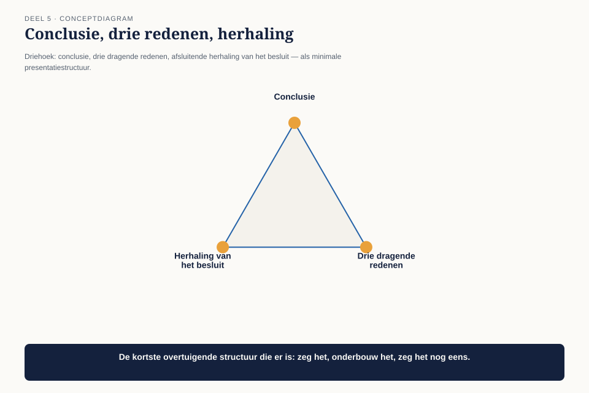
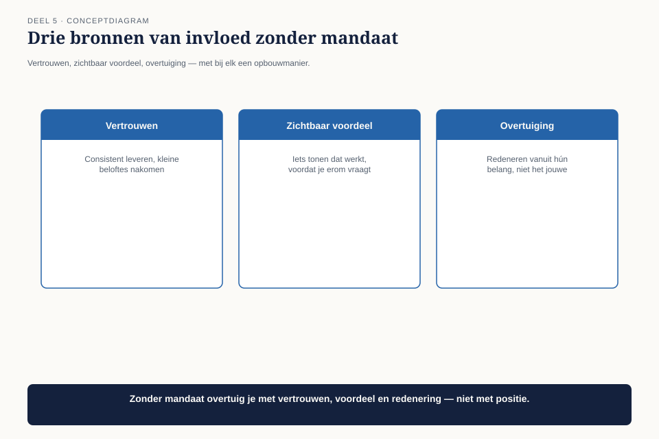

Deel 5 — Human Dynamics II: invloed
Niveau 1 — De kern | Deelnemersreader BTABoK-cursus, Ductus
5.1 Waar dit deel over gaat
Claudette weet nu wie ze moet bereiken en wanneer. Dit deel gaat over het laatste stuk: hoe ze schrijft en spreekt zodat het aankomt, hoe ze onderhandelt zonder haar inhoud te verkopen, en hoe ze leiding geeft aan mensen die niet aan haar rapporteren.
Dat laatste — leiderschap zonder mandaat — is misschien wel de kernvaardigheid van het hele beroep. Een architect heeft zelden doorzettingsmacht. Hij moet mensen meekrijgen die hem niets verschuldigd zijn.
Aan het eind van dit deel kun je:
- een document schrijven dat met de conclusie begint in plaats van ermee te eindigen;
- een presentatie structureren voor een publiek dat geen tijd en geen technische achtergrond heeft;
- het verschil toepassen tussen onderhandelen en toegeven;
- uitleggen wat leiderschap zonder mandaat inhoudt en wanneer het werkt.
5.2 De eenentwintig pagina’s
Terug naar deel 1: het document over de toekomstige integratielaag, eenentwintig pagina’s, drie reacties — alle drie van ontwikkelaars.

Het document is niet slecht geschreven in de zin van grammatica of helderheid per zin. Het probleem zit in de vorm. De conclusie staat op pagina negentien. Om er te komen, moet de lezer eerst de inleiding, de volledige context, de huidige situatie en vier alternatieven met hun afwegingen doorlopen — geschreven in de volgorde waarin Claudette het probleem zelf heeft leren kennen.
Dat is de volgorde van het onderzoek. Het is niet de volgorde van het lezen.
Dit is observatie O5: haar documenten worden niet gelezen. Wat ze mondeling zegt, komt niet aan bij niet-technische luisteraars.
5.3 Schrijven: de omgekeerde piramide
De BoK behandelt schrijfvaardigheid als eigen competentie binnen Human Dynamics, naast presenteren. De kern is één principe, ontleend aan de journalistiek en breed toepasbaar op architectuurdocumenten: de omgekeerde piramide.

| Laag | Wat erin staat | Wie hier stopt met lezen |
|---|---|---|
| Kop | de conclusie, in één zin, met het gevraagde besluit | de meerderheid van je lezers |
| Kern | de drie belangrijkste redenen, elk in een alinea | wie moet beslissen of adviseren |
| Onderbouwing | de analyse, cijfers, alternatieven | wie het besluit moet uitvoeren of verdedigen |
| Bijlage | het volledige onderzoek, detailtabellen | wie het wil narekenen of aanvechten |
De piramide staat op zijn kop ten opzichte van hoe de meeste technische mensen schrijven, en dat is geen toeval: onderzoek verloopt van vraag naar antwoord, en het is natuurlijk om het ook zo op te schrijven. Een lezer werkt andersom: hij wil eerst weten of hij door moet lezen, en pas dan waarom.
De regel om dit te toetsen: knip de eerste alinea eraf en lees hem los. Bevat hij de conclusie én het gevraagde besluit? Zo niet, dan is het geen kop maar een inleiding, en de omgekeerde piramide staat nog steeds op zijn kop op de verkeerde manier.
Vergelijk dit met het waarderingsblad uit deel 3: Claudette’s mondelinge versie in 3.9 begon al met de kern (“vier verstoringen zijn zeker toe te schrijven aan…”) — ze paste de piramide daar al onbewust toe. Dit deel maakt het bewust en herhaalbaar, ook op papier.
5.4 Presenteren voor wie geen tijd heeft
Dezelfde piramide geldt voor spreken, met één extra complicatie: een lezer kan teruglezen, een luisteraar niet. Wat gemist wordt, is weg.
Drie regels voor een mondelinge presentatie aan niet-technische luisteraars:
1. De eerste zin is de conclusie, niet de aanleiding. Niet “ik wil jullie meenemen in…” maar het antwoord zelf.
2. Eén technisch begrip per keer, en alleen als het het besluit draagt. Elk technisch woord dat je gebruikt zonder dat het besluit ervan afhangt, is een woord dat een deel van je publiek verliest — en met hen vaak ook de rest, omdat verwarring zich verspreidt door een zaal.
3. Bouw een afsluiting die het besluit herhaalt, niet een samenvatting die alles herhaalt. Een presentatie die eindigt met “samenvattend hebben we dus gezien dat…” verzwakt het besluit door het te verdunnen tussen tien andere punten.

5.5 Onderhandelen is niet toegeven
De BoK plaatst collaboration and negotiation als aparte competentie, en het onderscheid met toegeven is precies waar architecten vaak fout gaan — in twee tegenovergestelde richtingen.
Fout 1: star vasthouden aan het technisch optimale. Dit voelt integer maar is vaak een gebrek aan onderhandelvaardigheid vermomd als principe. Als je nooit een centimeter beweegt, ben je geen onderhandelaar maar een blokkade — en dat is precies het label “de rem” dat Claudette in deel 1 kreeg.
Fout 2: te snel toegeven om het conflict te vermijden. Dit voelt behulpzaam maar ondermijnt het hele punt van je functie: als je opgeeft zodra iemand tegenspreekt, is er geen architectuurfunctie nodig, alleen een uitvoerder.
De middenweg vergt één onderscheid: wat is de kern, en wat is de vorm?
Bij het koppelvlak-voorstel was de kern “dit moet gerepareerd worden vóór het risico zich manifesteert.” De vorm — wanneer precies, met welk budget, in welke sprint — is onderhandelbaar. Wie dat onderscheid niet vooraf maakt, onderhandelt op goed geluk en verliest vaak de kern om de vorm te redden, of andersom.
Werkvorm: de onderhandelruimte. Bepaal vóór elk gesprek drie dingen: wat is niet onderhandelbaar (de kern), wat is bespreekbaar (de vorm), en wat zou je zelf voorstellen als het andere doel — snelheid, budget, gemak — net zo zwaar weegt als de jouwe. Dat laatste punt is waar de meeste voorbereiding stopt, en waar het echte onderhandelen begint.
5.6 Leiderschap zonder mandaat
De vierde competentie in dit deel is de moeilijkste om te trainen omdat hij niet uit een techniek bestaat, maar uit een grondhouding. De BoK behandelt leadership and management binnen Human Dynamics, en voor een architect betekent dat vrijwel altijd leiding geven aan mensen die niet aan hem rapporteren.
Een projectmanager, een ontwikkelaar, een andere architect — niemand van hen is verplicht Claudette te volgen. Ze doen dat, als ze dat doen, om één van drie redenen: ze vertrouwen haar oordeel, ze zien zelf het voordeel, of ze zijn overtuigd door een argument. Positie speelt geen rol, want die heeft ze niet.

| Bron van invloed | Hoe je hem opbouwt | Hoe snel hij weer weg is |
|---|---|---|
| Vertrouwen | consistent zijn, fouten toegeven, doen wat je zegt | langzaam opgebouwd, snel kapot — één leugen of gemiste toezegging is genoeg |
| Zichtbaar voordeel | het werk van de ander makkelijker maken, niet alleen het eigen werk | verdwijnt zodra het voordeel wegvalt |
| Overtuiging | het beste argument hebben, helder gebracht (zie 5.3-5.4) | het meest kwetsbaar — een beter argument van iemand anders wint het |
De valkuil is denken dat overtuiging genoeg is. Voor de meeste mensen weegt vertrouwen zwaarder dan het beste argument — en vertrouwen bouw je niet op in één vergadering, maar over maanden van consistent gedrag. Dat is waarom deel 4 en deel 5 elkaar nodig hebben: de stakeholderkaart zonder opgebouwd vertrouwen is een trucje; vertrouwen zonder de juiste timing en vorm bereikt niemand.
5.7 De eenentwintig pagina’s herschreven
Claudette herschrijft het document. De nieuwe versie is twee pagina’s plus een bijlage.
Pagina 1 — de kop. Eén alinea: het voorstel, de kern van de onderbouwing, het gevraagde besluit.
Pagina 2 — de kern. Drie redenen, elk een korte alinea, elk met een cijfer uit het waarderingsblad van deel 3.
Bijlage. De volledige analyse van eenentwintig pagina’s — ongewijzigd, want voor wie het wil narekenen is die volledigheid waardevol. Ze verdwijnt niet; ze verhuist naar de plek waar ze hoort.
Twee ontwikkelaars lezen de bijlage nog steeds. Vier directieleden lezen nu de eerste twee pagina’s, en één van hen leest ook de bijlage — omdat hij, na de kop, zelf besloot dat hij het wilde narekenen. Dat is het verschil tussen een document dat gelezen wordt omdat het moet en een document dat gelezen wordt omdat de lezer zelf verder wil.
5.8 Observatie O5 gesloten
Haar documenten worden niet gelezen. Wat ze mondeling zegt, komt niet aan bij niet-technische luisteraars.
Er is niets veranderd aan Claudette’s analytische werk. De eenentwintig pagina’s aan onderzoek zijn nog steeds waar en nog steeds nodig. Wat veranderde, is de volgorde waarin ze worden aangeboden — van de volgorde van het onderzoek naar de volgorde van het lezen.
Drie dingen zijn veranderd:
Ze schrijft van conclusie naar detail, niet andersom.
Ze onderscheidt kern van vorm voordat ze een gesprek ingaat, en onderhandelt alleen over de vorm.
Ze bouwt invloed op via vertrouwen en zichtbaar voordeel, niet alleen via het beste argument — wetend dat het laatste het snelst verslijt.
Met deel 4 en 5 samen is Human Dynamics — de pijler die in deel 1 als winnaar uit de telling kwam — nu behandeld. In deel 6 verlaten we deze pijler en betreden Design: hoe je een probleem afbakent voordat je het oplost. Dat opent de weg naar O6, de ontbrekende besluitvorming, die in deel 7 wordt gesloten.
5.9 Kernbegrippen
| Begrip | Betekenis in deze cursus |
|---|---|
| Omgekeerde piramide | schrijfstructuur: conclusie eerst, dan kern, dan onderbouwing, dan bijlage |
| Onderhandelruimte | vooraf bepalen wat kern is (niet onderhandelbaar) en wat vorm is (wel) |
| Leiderschap zonder mandaat | invloed zonder doorzettingsmacht, via vertrouwen, zichtbaar voordeel of overtuiging |
| Vertrouwen als invloedsbron | langzaam opgebouwd, snel kapot — zwaarder wegend dan het beste argument |
Volgende deel: deel 6 — Design I: requirements en scope. De eerste twee pijlers zijn gesloten. Nu naar de vraag hoe je een probleem afbakent voordat je het oplost.